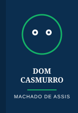
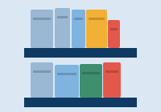
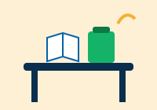
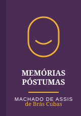
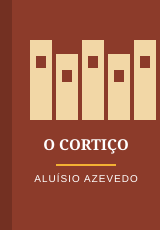
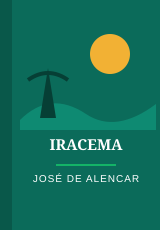
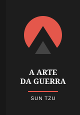
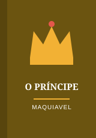
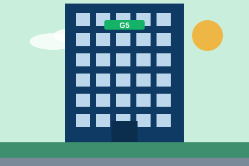

Dom Casmurro

Literatura brasileira
Machado de Assis narra a história de Bentinho e Capitu, um clássico sobre memória e ciúme.
Saiba maisA Biblioteca Digital UniFECAF nasceu para facilitar o acesso dos estudantes a livros, artigos e conteúdos de apoio à aprendizagem. Pelo site, o aluno consulta o acervo, descobre os títulos em destaque e conhece os serviços disponíveis em cada unidade.
Além do acervo físico, oferecemos e-books, salas de estudo e computadores para pesquisa. Nossa equipe orienta trabalhos acadêmicos, normas da ABNT e pesquisas em bases científicas, tanto presencialmente quanto online.

Empréstimo de livros nas três unidades.
Leitura online pelo celular ou computador.

Espaços silenciosos para estudo individual e em grupo.
Ajuda com normas ABNT e bases científicas.

Literatura brasileira
Machado de Assis narra a história de Bentinho e Capitu, um clássico sobre memória e ciúme.
Saiba mais
Literatura brasileira
Um defunto autor conta a própria vida com ironia, marco do Realismo no Brasil.
Saiba mais
Naturalismo
Aluísio Azevedo retrata a vida coletiva de um cortiço no Rio de Janeiro do século XIX.
Saiba mais
Romantismo
José de Alencar conta a lenda da criação do Ceará em uma prosa poética.
Saiba mais
Estratégia e gestão
Os ensinamentos de Sun Tzu sobre estratégia, muito usados em administração e negócios.
Saiba mais
Ciência política
Maquiavel analisa o poder e a liderança em uma das obras mais citadas da política.
Saiba maisMaior acervo físico da biblioteca, com salas de estudo em grupo, computadores para pesquisa e atendimento da equipe de bibliotecários.
Av. Vida Nova, 166 · Jardim Maria Rosa · Taboão da Serra/SP

Espaço moderno e silencioso, ideal para leitura individual, com cabines de estudo e tomadas em todas as mesas.
Av. Vida Nova, 28 · Piso G5 · Taboão da Serra/SP
Unidade com área de convivência e espaço de leitura, perto do transporte público do centro de Taboão da Serra.
Rod. Régis Bittencourt, 157 · Parque Santos Dumont · Taboão da Serra/SP
Ficou com dúvida sobre empréstimos, renovação ou acesso aos e-books? Fale com a equipe da biblioteca pelos canais abaixo ou visite uma das nossas unidades.